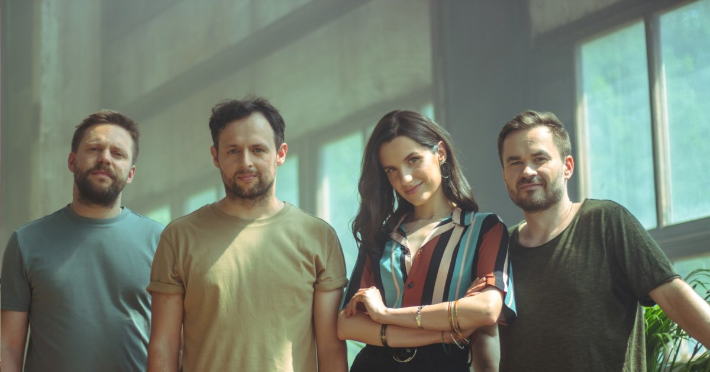
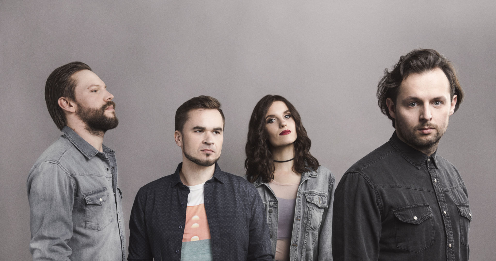
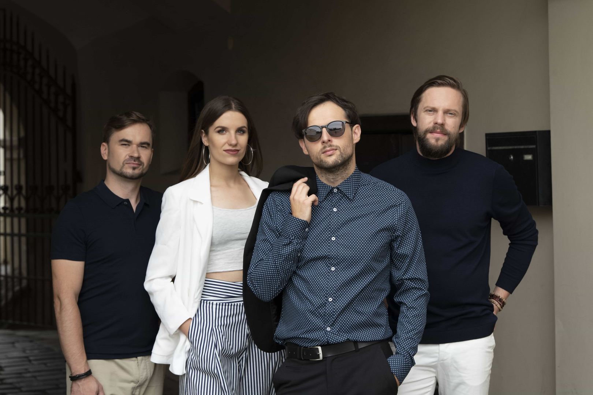
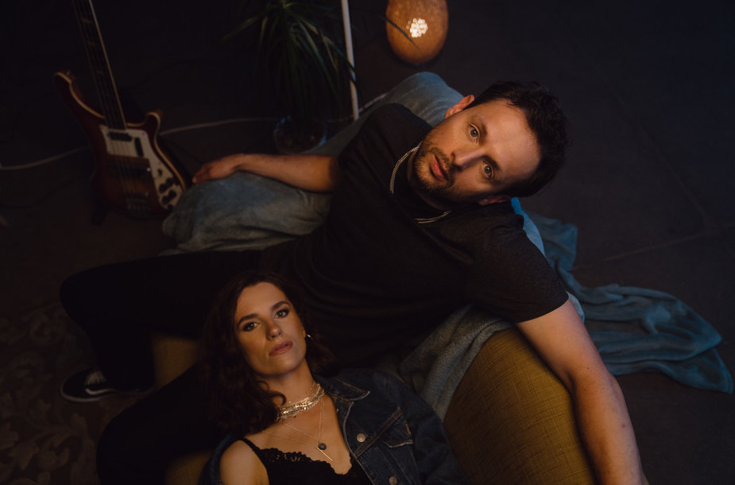

"Sisters On Wire" were formed in Vilnius in 2014, establishing their sound as a 'summerish' indie pop with elements of rock, electro and dreampop. 2016: Debut LP "Never Turn the Lights Off" was out. Songs "Roads", "Parallel World", "Your Eyes" and "You & I" were featured in several movies and TV programmes. In 2017 "Sisters On Wire" received nominations for Major Lithuanian Music Awards (M.A.M.A.) as a "Rock Act of 2016" and a "Breakthrough of 2016". In 2018 the band was opening for "A-ha" concert in Trakai Castle. The singles "Taip Jau Gavosi", "Mėlyna Mėlyna" and "Ten Esi Tu" released in 2020 had millions views on YouTube and led the TOP charts of major Lithuanian radiostations. Dec 2020 - M.A.M.A. nominees as a "Pop Act of 2020", "Mėlyna Mėlyna" - "Single of the Year". The same month "Mėlyna Mėlyna" won a "Song of the Year" award in Lietus radiostation and a "Lithuanian Single Number 1" in M1 radiostation. "Taip Jau Gavosi" was announced a 'Single of 2020" in Power Hit Radio.
|  |
Daina spinduliuoja būdinga grupei pozityvia energija, romantika bei ramybe. Tai lieto tempo kūrinys, gitarų bei elektroninių garsų mišinys, kuris puikiai susiklausys šiltomis vasaros dienomis. „Mėlyna, mėlyna – tai daina, kurią klausytojams pristatyti plačiai norėjome jau kurį laiką, tačiau būtent dabar atėjo jos metas. Dar nebuvo nė karto, jog dainuojant šią dainą nevirpėtų širdis. Tikiuosi, kad tai pajus ir klausytojai,“ – apie kūrinį̨ pasakoja vokalistė Ieva Ščerbinskaitė. Grupės narys ir dainų kūrėjas Olegas Jerochinas sako, kad ši daina emocionali ir žadinanti ilgesį. |
|  |
Tai labiau elektroninė muzika, pagardinta svajingais gitaros garsais bei vokalo efektais. Įdomu tai, jog pagrindinę vokalo partiją atlieka grupės narė Ieva, tačiau dainos tekstas yra vyriškosios pusės mintys. „Man patiko ši idėja parašyti dainą iš vyriškos perspektyvos, bet pateikti ją moterišku balsu“, – teigia dainos autorius Olegas. |
|  |
Paleisk Mane“ yra apie šios būsenos paleidimą, kai esi jau išvargęs ir tiesiog nori, kad tas liūdesys tave paleistų. |
|  |
Daina spinduliuoja būdinga grupei pozityvia energija, romantika bei ramybe. Tai lieto tempo kūrinys, gitarų bei elektroninių garsų mišinys, kuris puikiai susiklausys šiltomis vasaros dienomis. |